循环控制语句
循环控制语句改变了代码的执行顺序，通过它你可以实现代码的跳转。
Perl 提供了下列的循环控制语句:
| 控制语句 | 描述 |
|---|---|
| 停止执行从next语句的下一语句开始到循环体结束标识符之间的语句，转去执行continue语句块，然后再返回到循环体的起始处开始执行下一次循环。 | |
| 退出循环语句块，从而结束循环 | |
| continue 语句块通常在条件语句再次判断前执行。 | |
| redo 语句直接转到循环体的第一行开始重复执行本次循环，redo语句之后的语句不再执行，continue语句块也不再执行； | |
| Perl 有三种 goto 形式：got LABLE，goto EXPR，和 goto &NAME。 |
NEXT 语句
Perl next 语句用于停止执行从next语句的下一语句开始到循环体结束标识符之间的语句，转去执行continue语句块，然后再返回到循环体的起始处开始执行下一次循环。
语法
语法格式如下所示：
next [ LABEL ];
其中 LABEL 是可选的，如果没有指定 LABEL，next 语句将返回到循环体的起始处开始执行下一次循环。
实例 1
执行以上程序，输出结果为：
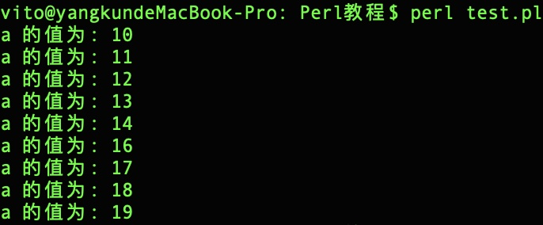
实例 2
执行以上程序，输出结果为：
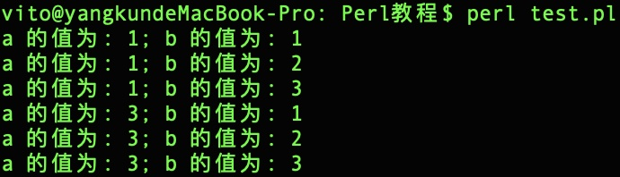
LAST 语句
Perl last 语句用于退出循环语句块，从而结束循环，last语句之后的语句不再执行，continue语句块也不再执行。
语法
语法格式如下所示：
last [LABEL];
流程图
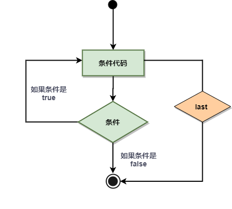
实例
执行以上程序，输出结果为：
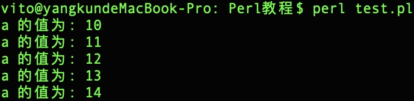
CONTINUE 语句
Perl continue 块通常在条件语句再次判断前执行。
continue 语句可用在 while 和 foreach 循环中。
语法
while 循环中 continue 语句语法格式如下所示：
while(condition){ statement(s); }continue{ statement(s); }
foreach 循环中 continue 语句语法格式如下所示：
foreach $a (@listA){ statement(s); }continue{ statement(s); }
实例
while 循环中使用 continue 语句：
实例
执行以上程序，输出结果为：
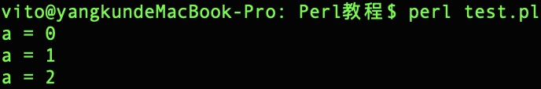
foreach 循环中使用 continue 语句：
实例
执行以上程序，输出结果为：
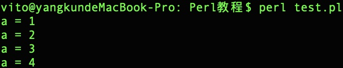
REDO 语句
Perl redo 语句直接转到循环体的第一行开始重复执行本次循环，redo语句之后的语句不再执行，continue语句块也不再执行。
continue 语句可用在 while 和 foreach 循环中。
语法
语法格式如下所示：
redo [LABEL]
其中 LABEL 是可选的。
带标号修饰符LABEL的redo语句表示把循环控制流程直接转到与标号修饰符LABEL相关联的语句块的第一行处开始执行，而不再执行redo语句之后的语句和continue语句块；
不带标号修饰符LABEL的redo语句表示把循环控制流程直接转到当前语句块的第一行处开始执行，而不再执行redo语句之后的语句和continue语句块；
如果是在for循环中或者是带有continue语句块，则for循环中的递增列表和continue语句块都不再被执行；
流程图
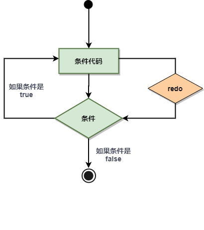
实例
执行以上程序，输出结果为：
执行以上程序，输出结果为：
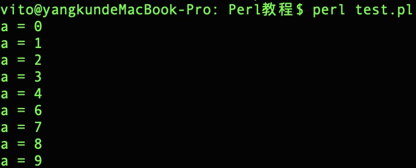
GOTO 语句
Perl 有三种 goto 形式：got LABLE，goto EXPR，和 goto &NAME：
| 序号 | goto 类型 |
|---|---|
| 1 | goto LABEL 找出标记为 LABEL 的语句并且从那里重新执行。 |
| 2 | goto EXPR goto EXPR 形式只是 goto LABEL 的一般形式。它期待表达式生成一个标记名称，并跳到该标记处执行。 |
| 3 | goto &NAME 它把正 在运行着的子进程替换为一个已命名子进程的调用。 |
语法
语法格式如下所示：
goto LABEL 或 goto EXPR 或 goto &NAME
流程图
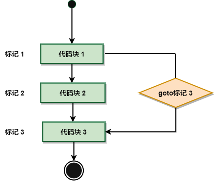
实例
以下两个实例在变量 $a 为 15 时跳出输出。
以下是一个常用的 goto 实例：
实例
执行以上程序，输出结果为：
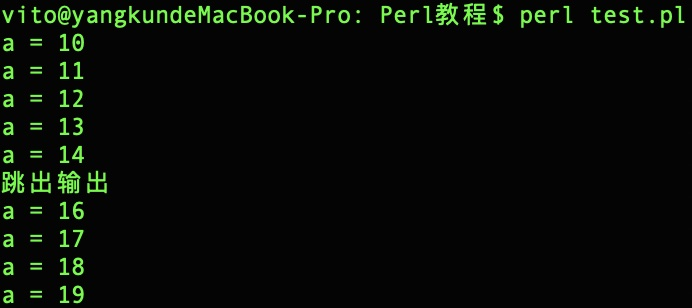
以下实例使用了 goto EXPR形式。我们使用了两个字符串，并使用点号 (.) 来链接。
实例
执行以上程序，输出结果为：
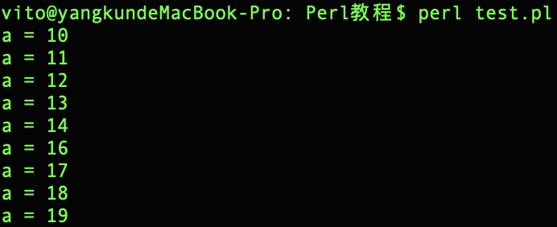